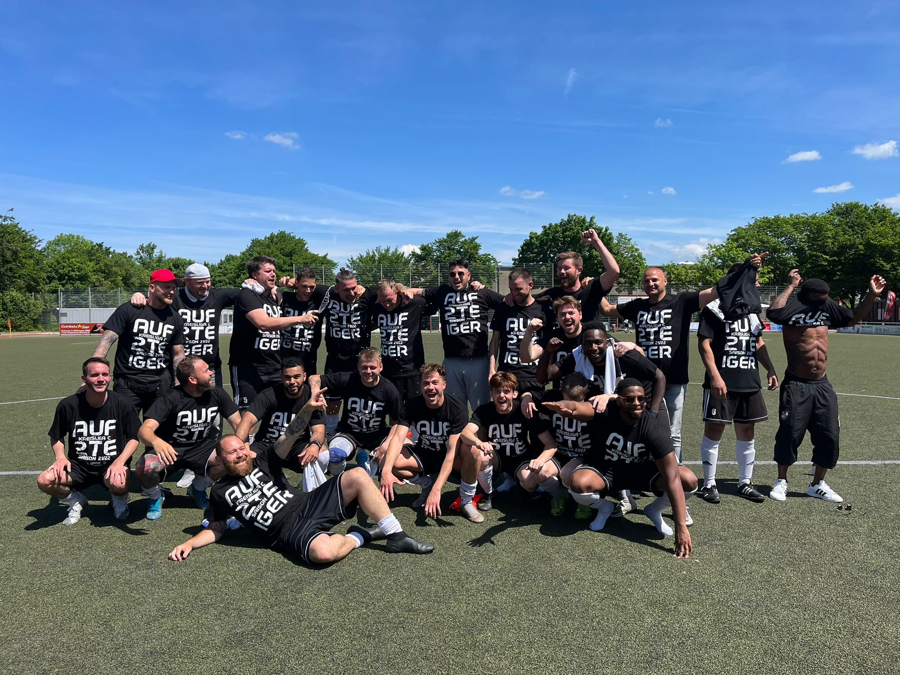

Senioren

02. Juli 2026
Neuausrichtung für die Saison 2026/27
Nach einer herausfordernden Spielzeit stellt sich der Germania Freund für die neue Saison im Herrenbereich neu auf. Mit zwei motivierten Herrenteams starten wir in der Kreisliga B und Kreisliga D voll durch.
Kader ansehen